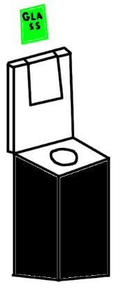

Visualizations help us understand the prototype better. The first visualization is a drawing made
in Paint which shows a very basic idea of the prototype, as shown below:

The green portion with the word "glass" is the paper that will be inserted into the slot. The
outline below the paper is the slot that the paper will be inserted into. The rest of the design
is the recycling bin. Of course, this is a very basic design, and was made during the design process.
We then made a second prototype drawing, shown below:

The two bins are the recycling bins. The white portion is the paper that will be inserted into the
slot, as shown above the bins. The "instructions" will have details on if the materials need to be
washed, cleaned, or have any other instructions before being recycled.